How Netflix, Uber, YouTube, and Spotify Handle Scale
Netflix randomly kills its own servers. On purpose. Uber divided the entire planet into hexagons. Google built a custom chip just for video encoding. And Spotify's recommendation engine reads lyrics. These four companies serve billions of users and all hit the same wall—too many users, too much data, too much speed required—but they solved the problems in radically different ways.
Netflix: Designing for Failure at 325 Million Subscribers
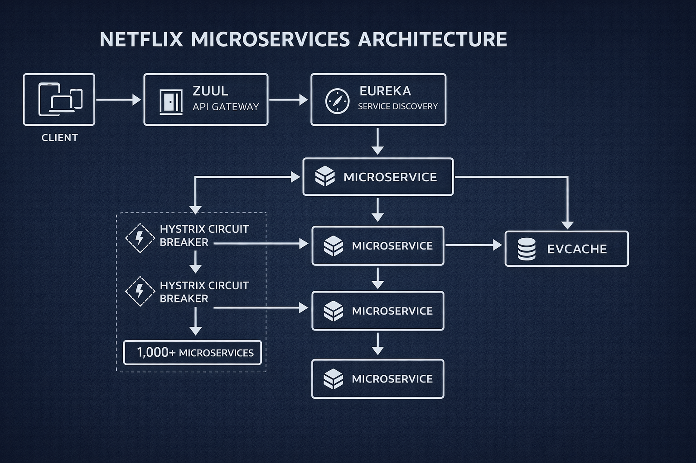
Netflix serves 325 million subscribers as of Q4 2025, all expecting instant playback across every device and connection type—from 5 Mbps DSL in rural India to gigabit fiber in Seoul.
From Monolith to 1,000+ Microservices
Netflix used to run a monolith—one big application, one codebase, one deployment. In 2008, a major database corruption took down DVD shipping for three days. That was the moment they decided to break apart the monolith and migrate to the cloud. It took seven years, service by service.
Today Netflix runs over 1,000 microservices on AWS. Each service does one thing, runs independently, and has its own database and deployment schedule. The recommendation service can update without touching billing. The tradeoff: 1,000 services that need to find each other, communicate, and handle it when one disappears.
The Request Path: Zuul, Eureka, and Hystrix
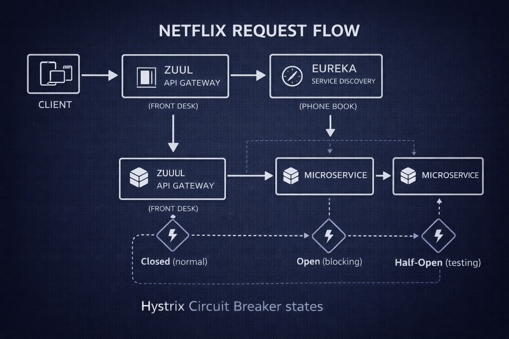
When you hit play on a show, your request first hits Zuul, Netflix's API gateway. Zuul handles authentication, routing, rate limiting, and logging. But with 1,000+ services scaling up and down constantly, IP addresses changing by the minute, you cannot hard-code routing.
Eureka is their service discovery system—a real-time phone book for microservices. Every service registers itself with Eureka on startup and sends heartbeats to confirm it is healthy. If the heartbeat stops, Eureka removes it from the registry.
But what happens when services fail? With 1,000 services, something is always failing. The math is unforgiving: if each service has 99.9% uptime, the probability that all 1,000 are up simultaneously is about 37%.
Netflix built Hystrix, a circuit breaker for microservices. When a downstream service fails, Hystrix trips the circuit and returns a fallback response—your personalized recommendations go generic. Not ideal, but the app does not crash. Without circuit breakers, one bad service takes down the entire system.
Chaos Engineering: Breaking Things on Purpose
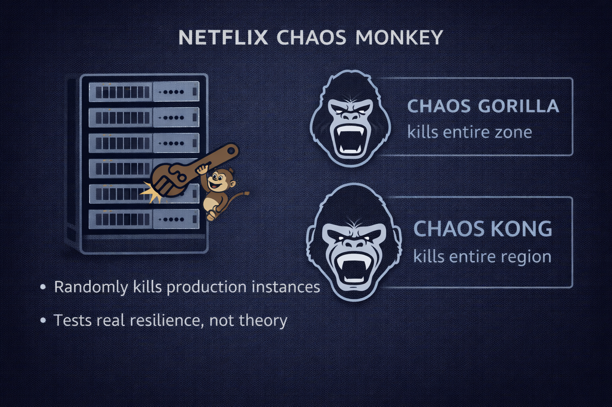
In 2011, Netflix built Chaos Monkey—a tool that randomly kills production instances. Real servers serving real users, on purpose. They expanded it into the Simian Army: Chaos Gorilla simulates an entire AWS availability zone going down, Latency Monkey adds artificial delays to test timeout handling. Chaos engineering is now an entire discipline—all because Netflix decided to break their own stuff on purpose.
Open Connect: 73 Tbps at the Edge
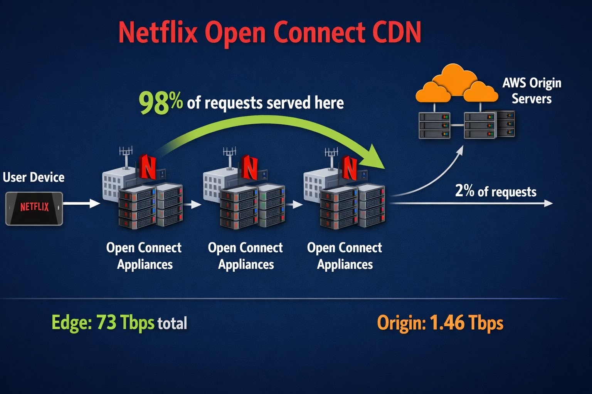
Open Connect is Netflix's custom CDN. Netflix literally installs its own hardware at ISPs around the world. The numbers: 73 terabits per second served at the edge, with a 98% cache hit rate. Origin servers handle only about 1.46 Tbps—2% of total traffic.
Netflix open-sourced nearly all of it: Zuul, Eureka, Hystrix, Chaos Monkey, EVCache. Their competitive advantage is not a load balancer—it is Squid Game and the recommendation algorithm. Compete on content, not on plumbing.
Uber: Hexagons, Matching, and Real-Time Pricing
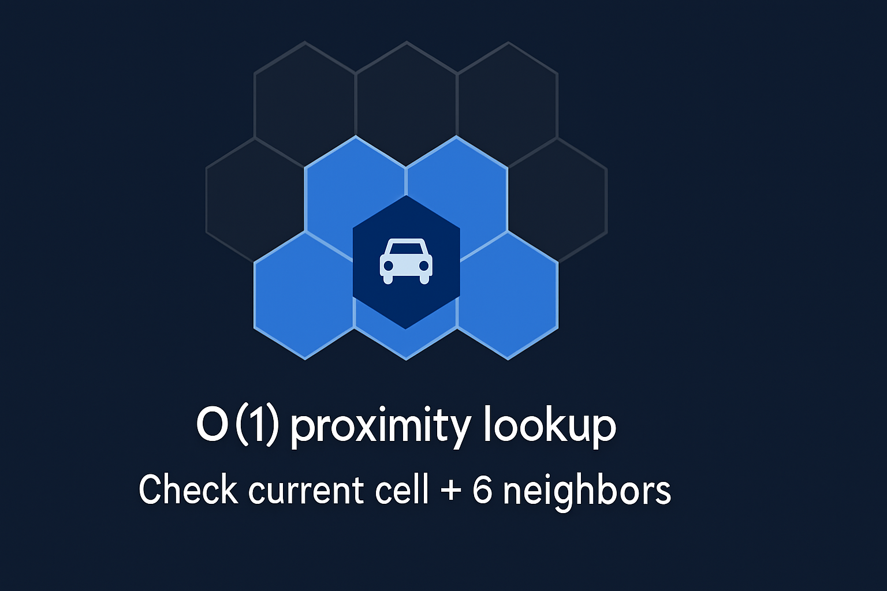
Uber processes 36 to 42 million trips per day across 202 million monthly active users. The engineering problem is fundamentally different from Netflix. Netflix delivers bits. Uber moves objects through physical space—real cars on real roads in real traffic. Every driver is sending GPS updates constantly, which means millions of pings per second hitting Uber's servers, each carrying the same question: is there a rider nearby who needs me right now?
Why Hexagons Beat Squares

Uber built H3, a hexagonal hierarchical geospatial index that divides the entire surface of the Earth into hexagons—like a giant honeycomb draped over the globe. Why hexagons instead of a simpler square grid? The math actually matters. With a square grid, you have eight neighbors: four share a full edge, four share only a corner point. The edge neighbor is 1.0 units away, but the diagonal neighbor is 1.41 units away—the square root of two, or 41% farther. That inconsistency creates real problems for proximity queries at massive scale. Distance calculations are not uniform, and you need special cases for diagonals.
Hexagons eliminate this entirely. Every single neighbor is the same distance away. Six neighbors, all equidistant. No corners, no diagonals, no edge cases. Proximity calculations are perfectly uniform in every direction. Hexagons also tile a sphere better than squares, with less distortion near the poles—the same kind of distortion that makes Greenland look the size of Africa on a Mercator map.
H3 is hierarchical, supporting multiple resolutions like zooming in on a map. Zoom out and one big hex covers an entire city—useful for regional demand analysis. Zoom in and tiny hexes cover a city block—perfect for matching a rider to a driver two streets away. Drivers get indexed by their current hex cell, making nearby-driver lookups effectively O(1)—constant time regardless of whether there are 100 drivers or a million. Look at the hex, check the six neighbors, done.
Bipartite Matching
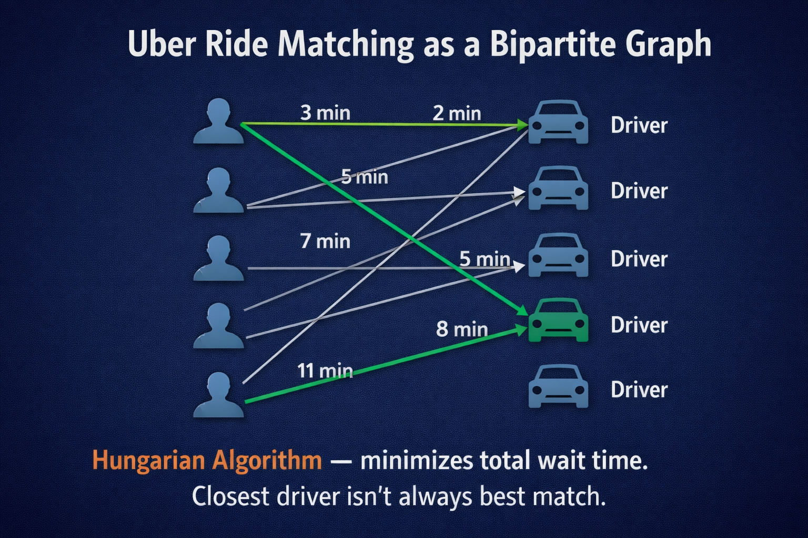
Finding nearby drivers is only half the problem. Uber uses a bipartite graph—imagine two columns, riders on the left, available drivers on the right, with lines connecting possible matches. Each line carries a cost: distance to pickup, estimated drive time, current traffic. The system uses a variation of the Hungarian Algorithm to minimize total wait time across all riders—not just yours. The closest driver is not always the best match, because sending them to you might leave someone else with a 20-minute wait. The algorithm sees the whole board, optimizing globally rather than locally. Averaged across millions of trips, everyone waits less.
This optimization runs continuously—not in batches, not once a minute. A new rider appears and the whole graph rebalances. A driver accepts a ride and the graph updates instantly. It is like solving a jigsaw puzzle where the pieces keep changing shape while you solve it, and you have to find the best arrangement in milliseconds.
Surge Pricing Mechanics
The engineering behind surge pricing is a real-time pricing engine running at global scale. In a given hex cell, the system computes supply and demand—riders requesting, drivers available. When demand exceeds supply, the price increase does two things simultaneously: it pulls drivers toward the high-demand area (higher price means higher earnings per trip), and it nudges some riders to wait or find alternatives. Supply up, demand down, market clears. Econ 101, but running in real-time code at algorithmic speed—computing supply-demand ratios across millions of hex cells, every few seconds, across over 10,000 cities worldwide.
Hot Path / Cold Path
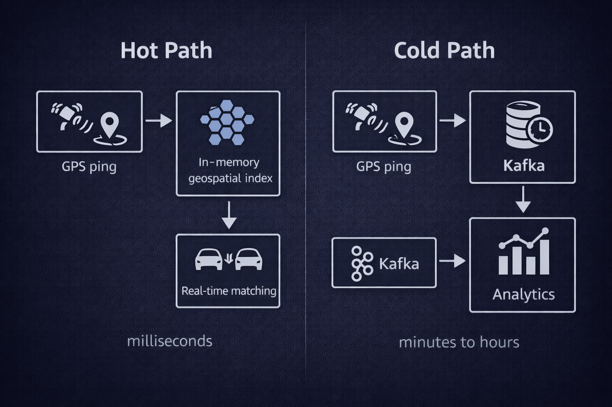
The hot path feeds GPS updates into an in-memory geospatial index for live ride matching—milliseconds matter. Drop this data and you drop a ride. The cold path routes the same data through Kafka into a time-series database for analytics, route optimization, and demand forecasting—predicting where riders will be at 5 PM on Friday. This data does not need to arrive in milliseconds; minutes or hours is fine. But it needs to be complete, no gaps, no dropped events. Same data, two priorities: speed versus completeness.
Uber open-sourced H3—the hexagonal index, free for anyone to use. Instacart uses it for delivery zones. Foursquare uses it for location intelligence. Same pattern as Netflix: build it, share it, compete on the product. The hexagons are free. The ride network is the moat.
YouTube: 500 Hours Per Minute and Custom Silicon
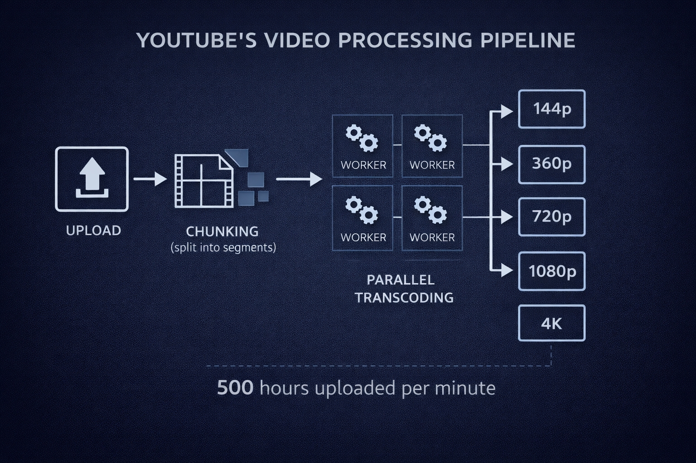
500 hours of video are uploaded to YouTube every single minute—over 720,000 hours of new video every day. Served to 2.7 billion monthly users who collectively watch 1 billion hours per day. YouTube is roughly 15% of global internet traffic. One platform, 15% of the internet.
The Ingest Pipeline
When you upload a video, a lot more happens than you would think. Your video arrives as a raw file—phone video, professional camera footage, screen recording, drone footage, webcam stream. All different codecs, resolutions, and frame rates. Some files are 100 megabytes, some are 100 gigabytes. YouTube has to handle all of it, and users expect their video to be watchable within minutes.
Step one: the video gets chunked—split into small segments, a few seconds each. Think of it like cutting a novel into individual chapters. Now each chapter can be handed to a different worker, processed independently, in parallel. That is the critical insight, because step two is transcoding, and transcoding is brutally expensive. The raw video gets converted into multiple formats and resolutions—144p all the way up to 8K, at least a dozen versions of the same video, each stored separately. One upload, a dozen copies, at 500 hours per minute. The storage numbers are almost incomprehensible. And because chunks are processed by stateless workers, the pipeline scales horizontally—add more machines, transcode more chunks.
The Codec Decision
| Codec | Compression | Encode Speed | When to Use |
|---|---|---|---|
| H.264 | Baseline | Fast | Universal playback—every device on Earth |
| VP9 | 30-50% better | Slower | Web video, royalty-free, good balance |
| AV1 | ~30% better than VP9 | 10-100x slower | High-view content where encoding cost pays off |
YouTube has to make a real-time economic decision for every single video uploaded. A trending video heading toward millions of views? Absolutely worth encoding in AV1—every view saves bandwidth, multiply by millions, and the encoding cost pays for itself many times over. A random video that will get 12 views? H.264 is fine. Do not burn expensive compute for 12 views. It is a cost-benefit calculation running constantly across 500 hours of new video every minute.
Custom Silicon: The VCU
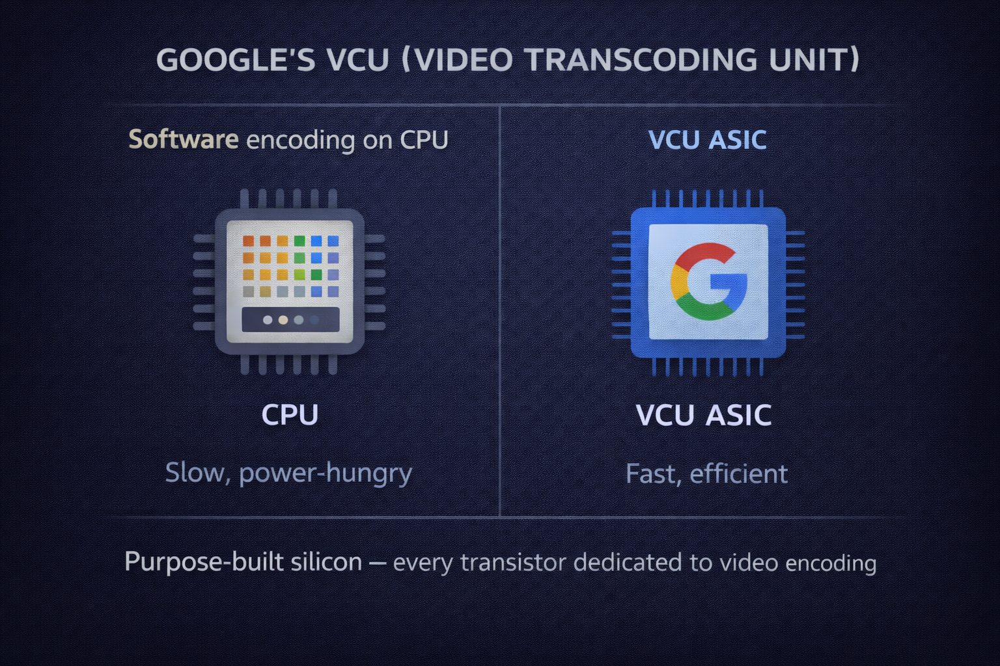
At 500 hours per minute, general-purpose CPUs could not keep up. Google built a custom ASIC called the Video transCoding Unit (VCU)—purpose-built silicon that does one thing: encode video. A general-purpose CPU is a Swiss Army knife; an ASIC is a custom surgical instrument. A CPU wastes energy on branch prediction, speculative execution, and general-purpose logic—overhead that is irrelevant for video encoding. The VCU strips all of that away, dedicating every transistor to the task. At YouTube's scale, that is a meaningful dent in both the power bill and the carbon footprint. Custom silicon is cheaper than buying more CPUs, even after spending millions on R&D and fabrication—a level of scale maybe five companies on Earth can justify.
Adaptive Bitrate Streaming
You have experienced adaptive bitrate streaming even if you do not know the name. You start watching a video, it is a little blurry, then sharpens to crisp HD. Your roommate starts streaming and quality drops. Then recovers when they stop. YouTube is constantly measuring your connection—available bandwidth, network latency, buffer health—and switches between quality levels in real time.
This is where chunking pays off again. Because the video was split into segments during ingest, each chunk can be served at a different quality level. The player monitors bandwidth and switches quality per chunk, not per video. Bandwidth drops? Next chunk arrives in 480p. Bandwidth recovers? Next chunk is 1080p. The switch happens at chunk boundaries, seamlessly. Multiply that adaptive decision by a billion hours of viewing per day—every viewer, every chunk, every quality decision, all happening in real time across a CDN that spans the planet.
The CDN Challenge
Netflix caches a known catalog—they know Stranger Things is popular, so they pre-cache it. YouTube gets 500 hours of new content every minute. You cannot pre-cache content that did not exist 30 seconds ago. So YouTube's CDN has to be reactive. A video goes viral in Brazil? Instantly replicate it to edge nodes across Latin America. Traffic shifts to India at peak hours? Pre-position popular content on Indian edge servers. Google operates one of the largest CDN networks on Earth, with points of presence in over 100 countries, peering directly with thousands of ISPs. When a video goes viral in Jakarta, it is being served from servers in Indonesia, not crossing the Pacific to a US data center. The data stays close to the eyeballs watching it. Without that infrastructure, the internet itself would buckle.
Spotify: Engineering Taste at 751 Million Users
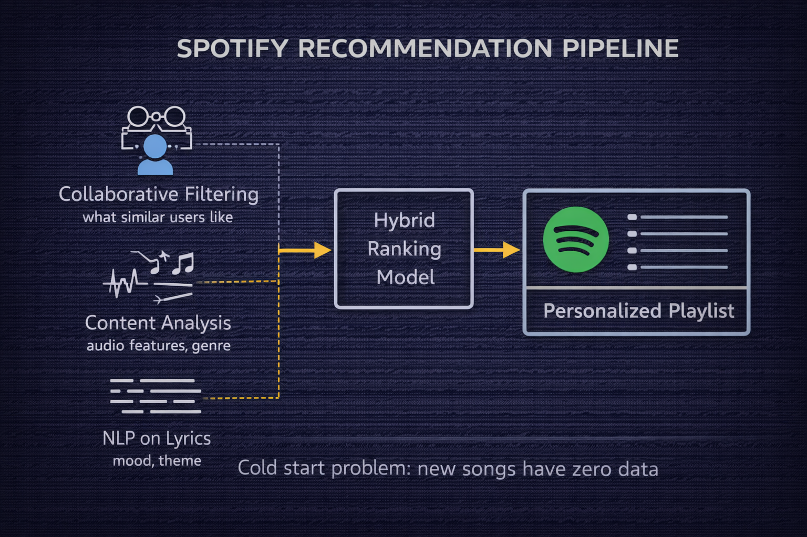
Spotify has 751 million monthly active users and 290 million premium subscribers. Their real product is not music—Apple Music, Amazon Music, and YouTube Music all have the same catalog. The catalog is basically commoditized. What keeps 290 million people paying is Discover Weekly, Release Radar, Daily Mixes—the feeling that Spotify gets you. That is not magic. That is engineering.
Three Approaches, One Hybrid Engine
The recommendation system combines three approaches, each filling the blind spots of the others. Collaborative filtering is the classic technique: if you and I listen to the same 50 songs, and I love one you have not heard, odds are you will love it too. People with similar taste like similar things. But at 751 million users and over 100 million tracks, the user-to-song matrix is mind-boggling—processing over 100 billion listening events per month.
Content-based analysis examines the music itself—not who listens to what, but what a song sounds like. Spotify analyzes measurable audio features of every track: tempo, key signature, energy level, danceability, acousticness, and something they call valence, which measures positivity. You gravitate toward 120 BPM songs with high energy? Here are other tracks with a similar audio fingerprint. Content analysis is essential because a brand new song with zero listens is invisible to collaborative filtering, but content analysis can scan the audio immediately and match it by sound on its very first day.
The third piece is NLP on lyrics. Spotify runs natural language processing models against the lyrics database. The system does not just know what a song sounds like—it knows what a song is about. Thematically, emotionally, contextually. Love song. Protest anthem. Breakup ballad. If you have been listening to breakup songs all week, the system knows not just from the sad piano, but from the words.
Semantic IDs and Pipeline Efficiency
In 2025, Spotify introduced Semantic IDs—compact mathematical representations that capture the relationship between a song and a listener. Think of it like a fingerprint for taste. Instead of storing every raw data point from every listen, you compress the essence into a dense code. ML models can read these codes directly—compare them, cluster them, find hidden similarities. The whole recommendation pipeline gets faster because you are moving around compact representations, not massive raw feature vectors. Less data, faster inference, better scaling.
Personalization vs. Experimentation
Spotify runs separate tech stacks for personalization and experimentation—completely separate systems. Why? Because they serve fundamentally different goals. Personalization gives a user the best experience right now, using everything the system knows about them. Experimentation tests a hypothesis: show group A one algorithm, group B a different one, measure which performs better. If you mix these systems, your experiments get contaminated—the personalization engine adapts to the experiment, muddies the results, and you cannot tell whether the new feature worked or the personalization just compensated. Separating them keeps the science clean. At 751 million users, A/B testing at that scale demands real engineering discipline.
The Cold Start Problem
One of the hardest problems in recommendations: a new user shows up with zero listening history. Collaborative filtering is useless. Content analysis has no preferences to match. Spotify falls back on demographics, location, time of day—what is popular in your city, what people your age in your region tend to like. Rough, but much better than random. Then they learn fast. Every song you play, every skip, every save, every playlist add. Within a few listening sessions, the model converges. That artist-selection screen during signup is not decorative—it is seeding the recommendation model, bootstrapping your taste profile from minute one. Every tap is a data point.
The cold start problem applies to new songs too. An unknown artist releases a track with zero plays—how does it ever get discovered? Content analysis can match it by audio similarity, but Spotify also uses explore-exploit balancing. Discover Weekly deliberately sprinkles unknown tracks into your mix. If you engage, the model learns and that track gets recommended more. If you skip, that is a data point too. Without exploration, your taste would calcify—you would hear the same stuff forever. Without exploitation, every playlist would feel random. Finding that sweet spot is an ongoing optimization that Spotify tunes constantly.
The Building Blocks
Underneath all four systems, the same patterns keep appearing.
Caching Patterns
| Pattern | How It Works | When to Use |
|---|---|---|
| Cache-aside + TTL | Check cache first; on miss, read DB, store in cache | 95% of use cases |
| Write-through | Write to cache + DB synchronously | Strong consistency needed |
| Write-behind | Write to cache, async flush to DB | High write throughput |
Message Queues
| Queue | Throughput | Best For |
|---|---|---|
| Kafka | 10M+ msg/sec | Event streaming with replay |
| RabbitMQ | 100K-1M/sec | Complex routing, low latency |
| SQS | ~300K/sec | Zero ops on AWS, infinite scale |
Consistent Hashing
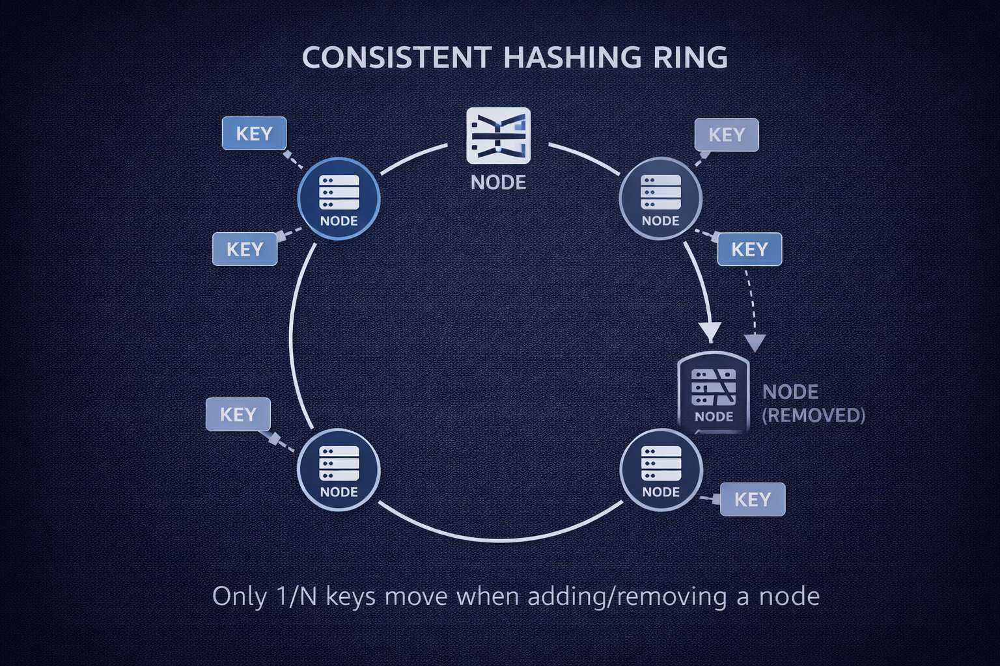
Raft Consensus
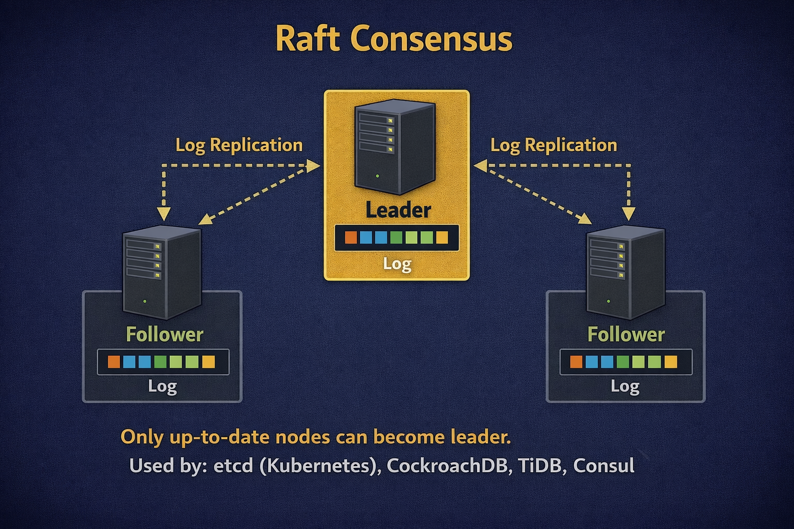
Raft solves distributed agreement with one key constraint: only servers with up-to-date logs can become leader. This simplifies everything downstream. Raft now powers etcd (Kubernetes), CockroachDB, TiDB, and Consul.
Key Takeaways
- Design for partial failure. With enough services, something is always down. Circuit breakers and chaos engineering are survival mechanisms.
- Custom solutions emerge at extreme scale. Netflix built Open Connect, Uber built H3, Google built custom silicon.
- Open-source the plumbing, compete on the product. All four companies gave away infrastructure tools.
- The same patterns recur everywhere. Consistent hashing, cache-aside, message queues, Raft. Learn the patterns.
- Split hot and cold paths. Same data, different priorities: speed for real-time, completeness for analytics.
- Recommendation is a hybrid problem. No single approach covers all cases.
- Understandability is a feature. Raft replaced Paxos by being implementable, not more correct.
Sources: Netflix Tech Blog, Uber Engineering Blog (H3), Spotify Engineering Blog, ByteByteGo, VDOCipher, FreeBSD Foundation, Slack Engineering, Stripe Engineering, Cloudflare Engineering
This post was adapted from Deep Dive Episode 3, an AI-generated podcast that goes deep on technology topics.